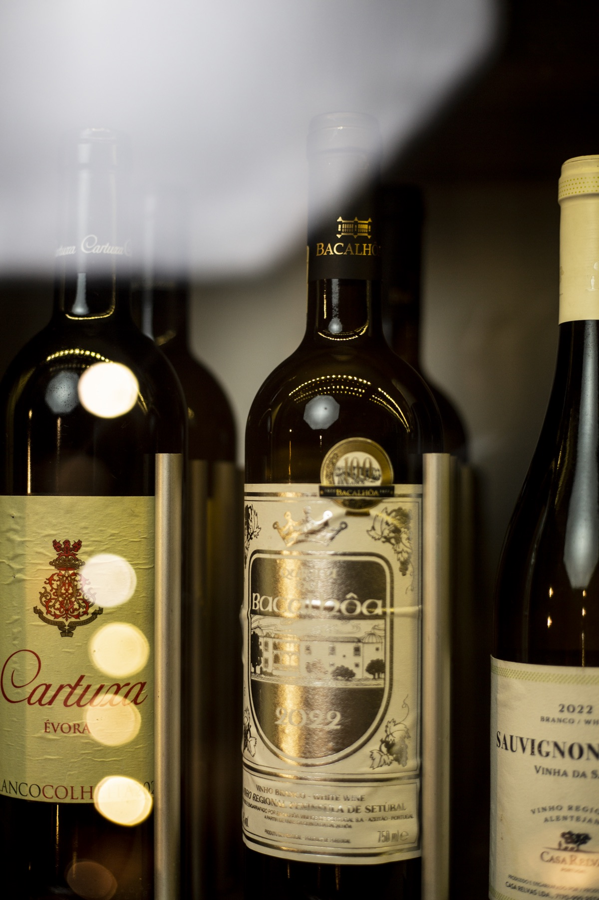

Os nossos espaços
Cada espaço tem a sua alma. Todos têm a forma Pátio de receber.
Do Morro Bento à Mutamba, descubra lugares pensados para celebrar, saborear, descansar e viver bons encontros.
Pátio Luanda
Morro Bento
- Casa-mãe
- Eventos
- Alojamento
- Catering
Onde tudo começou. O Morro Bento é a casa-mãe do Pátio Luanda: um destino completo, que junta gastronomia, eventos, alojamento e serviços de catering num só lugar, com a hospitalidade que nos define.
Conhecer o Morro Bento


Pátio Morro Bento
Espaços e cozinha da casa-mãe.
Pátio Morro Bento
Pratos preparados no Morro Bento.


Roots
by Pátio Luanda
Roots by Pátio Luanda
No Roots, a experiência ganha um tom mais intimista e sofisticado. Um espaço onde as raízes de Angola dialogam com uma cozinha de fusão contemporânea. E há também sushi.
- Salas elegantes
- Ambiente íntimo
- Jantares especiais
Pátio Luanda
Mutamba
No coração da cidade, a Mutamba prolonga o universo Pátio com uma proposta ideal para almoços, encontros e refeições com sabor de tradição e cidade.
- Salas interiores
- Esplanada
- Centro da cidade



Pátio Luanda
Aeroporto
Mais um espaço do Grupo Pátio em Luanda, na zona do Aeroporto. Contacte a equipa para confirmar morada, horário e serviços disponíveis.
Obter direçõesLocalizações
Encontre o seu espaço Pátio.
Quatro espaços em Luanda, cada um com a sua própria forma de receber.
O horário apresentado é geral. Confirme com a equipa se o espaço escolhido tiver um horário específico.